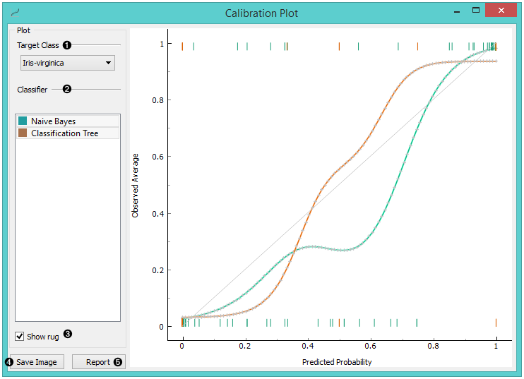
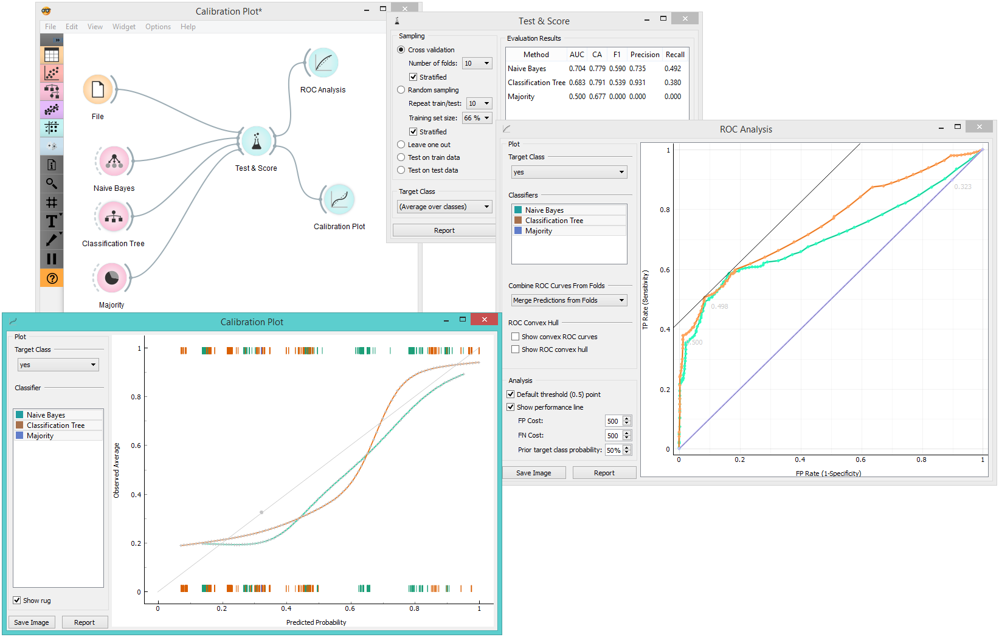

Calibration Plot
Shows the match between classifiers’ probability predictions and actual class probabilities.
Inputs
- Evaluation Results: results of testing classification algorithms
The Calibration Plotplots class probabilities against those predicted by the classifier(s).

- Select the desired target class from the drop down menu.
- Choose which classifiers to plot. The diagonal represents optimal behavior; the closer the classifier’s curve gets, the more accurate its prediction probabilities are. Thus we would use this widget to see whether a classifier is overly optimistic (gives predominantly positive results) or pessimistic (gives predominantly negative results).
- If Show rug is enabled, ticks are displayed at the bottom and the top of the graph, which represent negative and positive examples respectively. Their position corresponds to the classifier’s probability prediction and the color shows the classifier. At the bottom of the graph, the points to the left are those which are (correctly) assigned a low probability of the target class, and those to the right are incorrectly assigned high probabilities. At the top of the graph, the instances to the right are correctly assigned high probabilities and vice versa.
- Press Save Image if you want to save the created image to your computer in a .svg or .png format.
- Produce a report.
Example
At the moment, the only widget which gives the right type of signal needed by the Calibration Plot is Test & Score. The Calibration Plot will hence always follow Test & Score and, since it has no outputs, no other widgets follow it.
Here is a typical example, where we compare three classifiers (namely Naive Bayes, Tree and Constant) and input them into Test & Score. We used the Titanic dataset. Test & Score then displays evaluation results for each classifier. Then we draw Calibration Plot and ROC Analysis widgets from Test & Score to further analyze the performance of classifiers. Calibration Plot enables you to see prediction accuracy of class probabilities in a plot.
